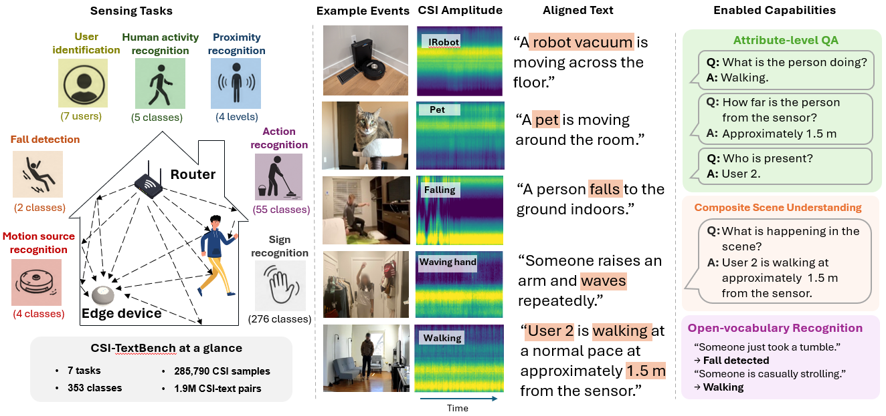

CSI-TextBench builds on diverse WiFi CSI recordings (including large-scale in-the-wild data) and pairs them with hierarchical natural-language descriptions, enabling CSI–language alignment, open-vocabulary queries, and compositional scene understanding.
Indoor context matters for assisted living, smart buildings, and broader ambient intelligence, yet it remains weakly connected to the language-aligned paradigm of modern multimodal systems. WiFi Channel State Information (CSI) passively captures human activity and environmental dynamics through ubiquitous wireless infrastructure—but unlike vision and audio, CSI lacks naturally co-occurring text, leaving a gap between wireless sensing and language-grounded AI.
CSI-TextBench is the first large-scale dataset and benchmark for CSI–language alignment. It unifies three sensing benchmarks into 285,790 samples across 7 tasks and 353 classes, paired with 2,291 hierarchically structured descriptions to form roughly 2.0 million CSI–text pairs. The benchmark evaluates alignment methods across supervised-style recognition, few-shot transfer to unseen classes, open-vocabulary prompting, and compositional reasoning over activity, proximity, and identity.
Experiments show that contrastive alignment can match supervised classifiers without class labels, transfer through few-shot adaptation, and accept open-vocabulary natural-language queries. A single unified model supports compositional scene understanding on joint queries, achieving 86.9% top-1 accuracy on 140 composite scenes—outperforming ensembles of task-specific classifiers. CSI-TextBench aims to establish WiFi as a language-indexed perception layer for ambient intelligence.
CSI-TextBench integrates CSI-Bench, XRF55, and SignFi with standardized amplitude tensors and task-aware templated text (including hierarchical captions for multi-attribute scenes). Signals follow a unified preprocessing pipeline consistent with CSI-Bench: amplitude extraction, 5-second windows, z-normalization, and aligned subcarrier dimensions. Text is grounded in signal-relevant semantics—activity, gesture, proximity, motion source, and user-related attributes—without leaking deployment-specific identifiers.
Task-level statistics (from the paper)
| Task | Source | Classes | CSI samples | Unique texts |
|---|---|---|---|---|
| HAR | CSI-Bench | 5 | 55,684 | 221 |
| Proximity | CSI-Bench | 4 | 55,684 | 216 |
| User ID | CSI-Bench | 7 | 55,684 | 224 |
| Fall detection | CSI-Bench | 2 | 6,700 | 10 |
| Motion source | CSI-Bench | 4 | 60,858 | 20 |
| Sign recognition | SignFi | 276 | 8,280 | 1,380 |
| Action recognition | XRF55 | 55 | 42,900 | 220 |
| Total | 353 | 285,790 | 2,291 |
Multitask CSI-Bench tasks (HAR, Proximity, User ID) share the same underlying recordings; total task instances correspond to 174,422 unique recordings. For XRF55 and SignFi, the release includes preprocessing scripts and CSI–text registry files; obtain raw CSI from the original dataset providers under their licenses.
Six alignment methods spanning contrastive (InfoNCE, SigLIP), anchor-based (LanguageBind, CentroBind), non-contrastive (Barlow Twins), and generative masked prediction objectives are evaluated under a shared dual-encoder design with a frozen text encoder and learned CSI encoder, isolating the effect of the alignment objective on many-to-many CSI–text correspondence.
@misc{csi-textbench,
title = {CSI-TextBench: A Dataset and Benchmark for Language-Grounded Ambient Perception with WiFi},
author = {Anonymous},
year = {2026}
}Replace the BibTeX entry with the camera-ready citation when available.